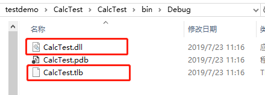

原文连接:https://www.cnblogs.com/guhuazhen/p/11230933.html
最近因为工作需要，客户那边工程师使用的是JAVA语言开发的程序，我们这边平台中是用C#语言开发的，因为有些操作必须统一，所以我在网上查找解决方法，自己也实践过，在这里做个笔记吧，分享一下。
一、使用C#编写com组件
开发环境 ：VS2017
1、新建工程:CalcTest（类库项目，根据自己喜好需要取工程名，框架我这里使用的是：.NET Framework 4 ，你可以根据自己的来选。 （注：下面红色框和箭头和需要注意的地方）
2、右键项目属性，点击项目属性，看到下面这个界面，点击红色框框"程序集信息，使程序集com可见，打上勾，如下图所示
程序集中其他信息可以根据个人喜好可写可不写。
3、选择生成看到以下界面，平台目标选择:X64, 为COM互操作注册(C) 勾上，如下图操作。
4、接下来是设置强签名，要以管理员的身份运行
①.找到Visual Studio Command Prompt (VS2017 开发人员命令提示)
输入命令：sn -k D:/CalcComkey.snk
这里我生成的CalcComkey.snk 文件放在D盘，注意选择你自己的保存路径。
VS2017 开发人员命令提示工具的路径是安装VS2017 路径下，你可以自己找一下，每个人安装位置不一样。
比如我的是 ： C:\ProgramData\Microsoft\Windows\Start Menu\Programs\Visual Studio 2017\Visual Studio Tools
5、在签名 标签中选中 为程序集签名，选择刚刚生成的强名称文件CalcComkey.snk 。
6、创建GUID
通过点击工具 => 创建GUID => 选择4 => New Guid => copy => 替换下面 C#代码中的两个 GUID 值
创建GUID，新建复制，粘贴到代码中去就可以，把代码中那两个都替换掉。

using System;
using System.Collections.Generic;
using System.Linq;
using System.Runtime.InteropServices;
using System.Text;
namespace CalcTest
{
[Guid("68E2A6FD-F437-4107-A6DB-E78714EC8D8B")] //GUID值
interface ICalc
{
[DispId(1)]
int Add(int a, int b); //返回的int值，与需要调用的类的方法名一致。
}
[Guid("60D60EE5-EAF3-482C-BE33-DED6BE635111"), ClassInterface(ClassInterfaceType.None)] //GUID值
public class Calc : ICalc //类名，接口名 ，必须定义接口
{
public Calc() { }
//定义具有两个参数的方法，返回计算结果。根据各自需要定义。
public int Add(int a, int b)
{
return a+b;
}
}
}7、编译生成程序，Debug目录中会生成 CalcTest.dll 和CalcTest.tlb。

二、java调用C#编写com组件
一、准备工作
1、刚刚上文中我们生成的两个文件，CalcTest.dll 、 CalcTest.tlb，先保存起来，一会儿会用到。
命名空间为：CalcTest、类名为：Calc
2、jacob下载，可以自主下载，这里提供一个，下面是百度网盘的地址和提取码：
链接：https://pan.baidu.com/s/1U_2NDpQvmScSB9_fICW9Ig
提取码：s60u
二、实现步骤
1、将CalcTest.dll、CalcTest.tlb复制到JAVA开发环境中，JAVA环境中需要安装对应版本的.net framework
注：JAVA开发环境指JDK下的bin目录，我的是win7的系统，默认就安装了.NET Framework 4.0
2、在JAVA开发环境中注册新生成的com组件,在客户环境中，通过regasm.exe注册com组件。
Regasm.exe默认安装路径为：C:\Windows\Microsoft.NET\Framework\v2.0.50727
注：因为上面我们选择的是X64平台，因此框架是选择Framework64，路径为：
C:\Windows\Microsoft.NET\Framework64\v4.0.30319
还有步骤1的意思就是，把CalcTest.dll、CalcTest.tlb复制到这个路径下面C:\Windows\Microsoft.NET\Framework64\v4.0.30319
注：图片中的InvokeTest.dll和Invoke.tlb就是我们上文的CalcTest.dll、CalcTest.tlb
①、按下win+R，输入cmd进入控制面板
②、输入 cd C:\Windows\Microsoft.NET\Framework64\v4.0.30319
③、接下来，手动注册COM方法：运行命令（管理员身份运行）
④、regasm CalcTest.DLL /CalcTest.tlb
出现以下界面说明注册成功：
注：图片中的InvokeTest.dll和Invoke.tlb就是我们上文的CalcTest.dll、CalcTest.tlb
3、强签名的dll文件添加到缓存中
1、首先找到gacutil，路径为：C:\Program Files (x86)\Microsoft SDKs\Windows\v10.0A\bin\NETFX 4.6.1 Tools
注：也有可能在这里路径下面找不到gacutil，那么就去下载一个或者找一下其他地方的复制过来，我一开始就没有这个bin文件夹，从其他地方拷贝过来的。
注：图片中的InvokeTest.dll和Invoke.tlb就是我们上文的CalcTest.dll、CalcTest.tlb
2、接下来就是要将dll添加到缓存中
①、按下win+R，输入cmd进入控制面板
②、输入
cd C:\Program Files (x86)\Microsoft SDKs\Windows\v10.0A\bin\NETFX 4.6.1 Tools
③、执行命令： 执行这个命令需要InvokeTest.DLL 具有强名称
gacutil -i C:\Program Files\Java\jdk1.8.0_181\bin\InvokeTest.DLL
注：上面这个路径因人而异，找到你自己jdk的存放路径，把InvokeTest.dll、InvokeTest.tlb放到bin文件夹下面。
注：图片中的InvokeTest.dll和Invoke.tlb就是我们上文的CalcTest.dll、CalcTest.tlb
Ok，dll添加到缓存中的操作就完成了，看到以下界面就说明成功添加了
或者
4、查看注册表regedit，HKEY_CLASSES_ROOT中是否有InvokeTest.MyMd5 项，如果有说明注册COM成功。如果没有，请重新注册。重复上面过程。
查看注册表，不知道怎么操作的，下面链接可以打开看，或者自己上网查。
https://jingyan.baidu.com/article/295430f10e5cc80c7e00500d.html
看到以下界面说明注册成功了
注：图片中的InvokeTest.MyMd5就是我们上文的CalcTest.Calc,因为节省时间，我上文给大家演示了一遍，下面这个是按照我实践过的例子贴的经验，
三、Java项目调用
1、新建项目，引用jacob.jar
2、实现，直接贴代码
package test;
//=================导包=======================
import com.jacob.activeX.ActiveXComponent;
import com.jacob.com.ComThread;
import com.jacob.com.Dispatch;
import com.jacob.com.Variant;
//=================导包=======================
public class main {
public static void main(String[] args) {
// TODO Auto-generated method stub
try
{
ComThread.InitSTA();
ActiveXComponent dotnetCom = null;
//需要调用的C#代码中的命名空间名和类名。
dotnetCom = new ActiveXComponent("CalcTest.Calc");
//需要调用的方法名和参数值
Variant var = Dispatch.call(dotnetCom,"Add",1,2);
String str2 = var2.toString(); //返回需要的字符串
System.out.println(str2.toString());//打印结果，结果等于3
}
catch (Exception ex)
{
ex.printStackTrace();
}
finally
{
ComThread.Release();
}
}
}
声明：下面操作主要分为两部分，第一部分使用C#编写com为了写这篇文章我是新建的操作demo，
第二部分java调用c#编写的com组件，因为是工作时的demo，因为当时有给客户写了使用说明，在这里拿一些截图出来用一下，为了节省时间，我就不再操作一遍了，如有不理解的可以留言。
ok,对于整个操作过程就分享到这里了，如果有不理解的，或者我有讲的不对的请帮忙指出，谢谢。